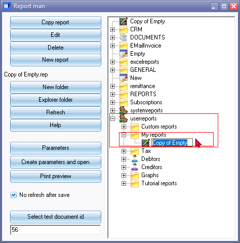
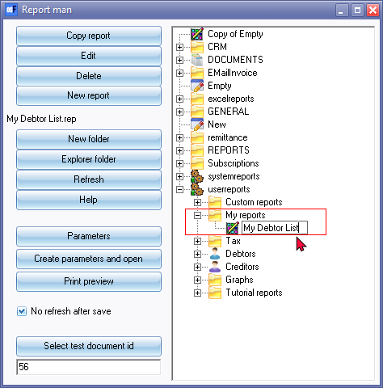
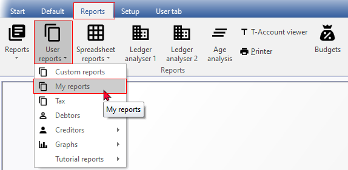

Rename reports
You may rename a report from the user reports menu, or your own reports.
If a report, which contains parameters, is renamed both the report (*.rep) and parameter (*.dfm) files will be renamed.
|
|
All reports which are required to manage the reporting is listed Reports - File structure and should not be deleted or changed. Do not select any of the standard reports in the Reports menu (stored in the .../plug_ins\reports\systemreports folder). See Reports - System reports - File names should not be deleted or renamed. |

To rename a report:
- On the "Report man" screen, select the report you wish to rename.

- Click twice (2x) on the report. The name of the report is editable. Overtype the report name with your own.

- Click on the Refresh button.
|
|
You may rename a report in the Explorer folder. To do this:
If the report includes a parameter, you may select both report (*.rep) and the parameter (*.dfm) file to rename both files at once. The names for the report and parameter file should be exactly the same. |

|
|
You may select your new report and click on the Print preview button to check and test your report. |

- You may exit the report man screen and access your new renamed report from the User reports menu (Reports ribbon).

|
|
You may make the report directories and reports translatable via the language files. See Reports - System reports - File names for a structured list of the file names for folders and reports available in the Reports menu. To rename folders: Find translatable language id's in the Tools → Customise language menu (Setup ribbon). In the Explorer folder rename the Folders with a language file id as TRN_160 for Debtors, TRN_161 for Creditors, etc. To rename reports: Select the report you wish to be translatable. Rename both the report (*.rep) as well as the parameter (*.dfm) (if parameters is applicable) with the id number prefixed with TRN_ (underscore). For example, TRN_906045 for Debtor list, TRN_906046 for Creditor list, etc. Once you have renamed your folders and/or reports; restart osFinancials and Open a Set of Books. When you click on the Reports ribbon, the reports menus will be refreshed. |